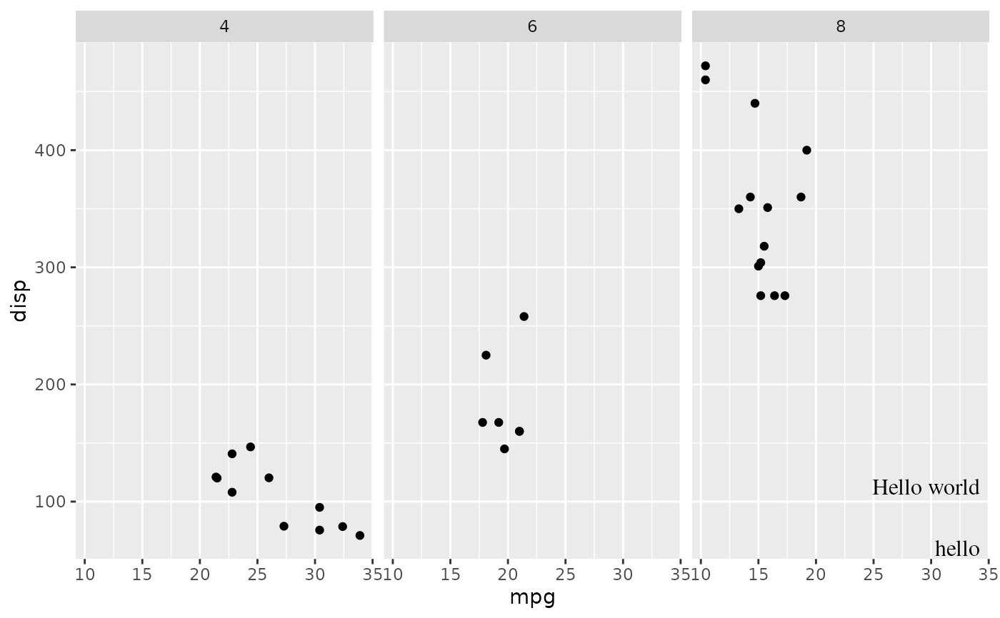
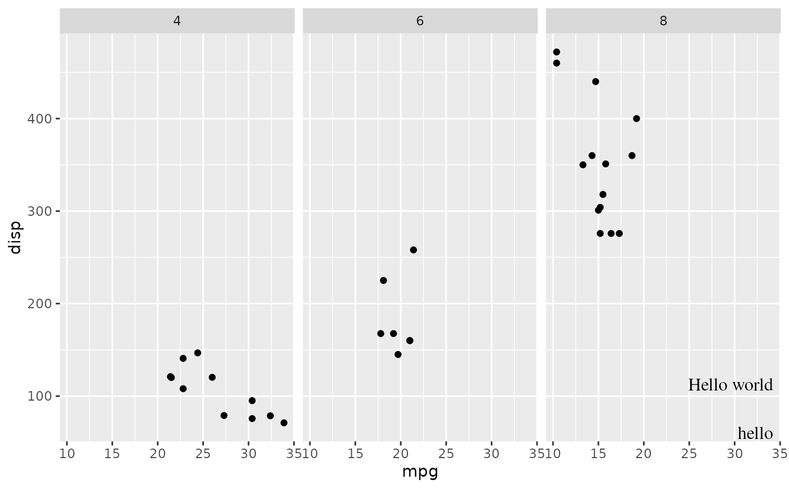

add_grob.Rdadd grob to a plot
add_grob(p, ..., ggplot = TRUE)library(ggplot2)
library(grid)
p <- ggplot(mtcars, aes(mpg, disp)) +
geom_point() +
facet_wrap(~cyl)
g1 <- textGrob("hello",
x = 0.98, y = 0.1, hjust = 1, vjust = 0,
gp = gpar(fontfamily = "Times"))
g2 <- element_grob_text(element_text(family = "Times", hjust = 1, vjust = 0, size = 12),
label = "Hello world", x = 0.98, y = 0.2)
add_grob(p, g1, g2)

add_grob(p, g1) %>% add_grob(g2)
